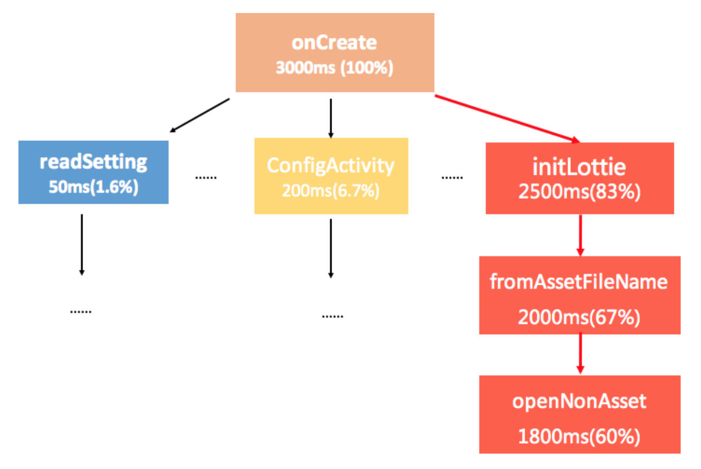
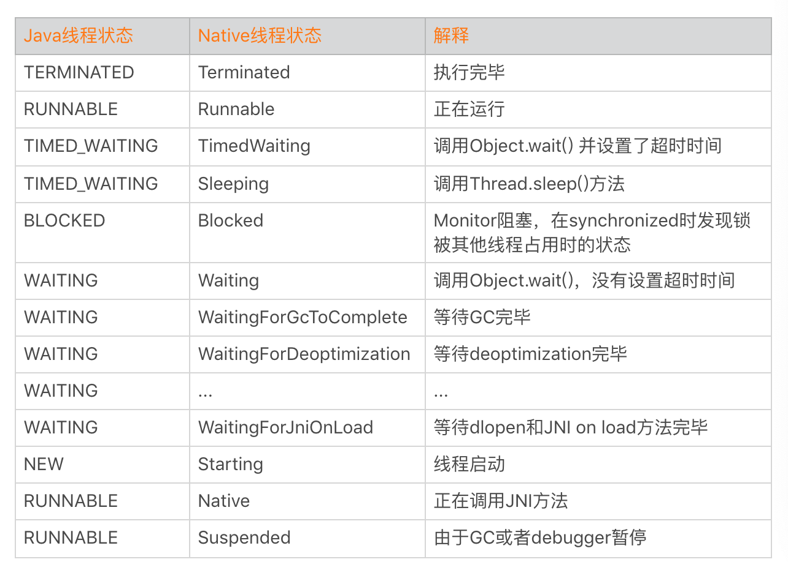
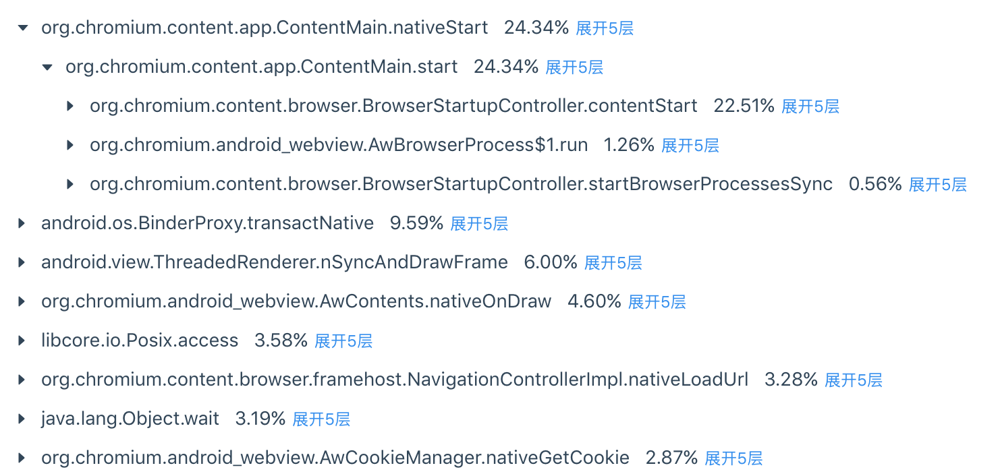

我们使用上一期所讲的插桩或者 Profilo 的方案，可以得到卡顿过程所有运行函数的耗时。在大部分情况下，这几种方案的确非常好用，可以让我们更加明确真正的卡顿点在哪里。
但是，你肯定还遇到过很多莫名其妙的卡顿，比如读取 1KB 的文件、读取很小的 asset 资源或者只是简单的创建一个目录。
为什么看起来这么简单的操作也会耗费那么长的时间呢？那我们如何通过收集更加丰富的卡顿现场信息，进一步定位并排查问题呢？
卡顿现场
我先来举一个线上曾经发现的卡顿例子，下面是它的具体耗时信息。

从图上看，Activity 的 onCreate 函数耗时达到 3 秒，而其中 Lottie 动画中openNonAsset函数耗时竟然将近 2 秒。尽管是读取一个 30KB 的资源文件，但是它的耗时真的会有那么长吗？
今天我们就一起来分析这个问题吧。
1. Java 实现
进一步分析 openNonAsset 相关源码的时候发现，AssetManager 内部有大量的 synchronized 锁。首先我怀疑还是锁的问题，接下来需要把卡顿时各个线程的状态以及堆栈收集起来做进一步分析。
步骤一：获得 Java 线程状态
通过 Thread 的 getState 方法可以获取线程状态，当时主线程果然是 BLOCKED 状态。
什么是 BLOCKED 状态呢？当线程无法获取下面代码中的 object 对象锁的时候，线程就会进入 BLOCKED 状态。
// 线程等待获取 object 对象锁synchronized (object) { dosomething();}WAITING、TIME_WAITING 和 BLOCKED 都是需要特别注意的状态。很多同学可能对 BLOCKED 和 WAITING 这两种状态感到比较困惑，BLOCKED 是指线程正在等待获取锁，对应的是下面代码中的情况一；WAITING 是指线程正在等待其他线程的“唤醒动作”，对应的是代码中的情况二。
synchronized (object) { // 情况一：在这里卡住 --> BLOCKED object.wait(); // 情况二：在这里卡住 --> WAITING}不过当一个线程进入 WAITING 状态时，它不仅会释放 CPU 资源，还会将持有的 object 锁也同时释放。对 Java 各个线程状态的定义以及转换等更多介绍，你可以参考Thread.State和《Java 线程 Dump 分析》。
步骤二：获得所有线程堆栈
接着我们在 Java 层通过 Thread.getAllStackTraces() 进一步拿所有线程的堆栈，希望知道具体是因为哪个线程导致主线程的 BLOCKED。
需要注意的是在 Android 7.0，getAllStackTraces 是不会返回主线程的堆栈的。通过分析收集上来的卡顿日志，我们发现跟 AssetManager 相关的线程有下面这个。
"BackgroundHandler" RUNNABLE at android.content.res.AssetManager.list at com.sample.business.init.listZipFiles通过查看AssetManager.list的确发现是使用了同一个 synchronized 锁，而 list 函数需要遍历整个目录，耗时会比较久。
public String[] list(String path) throws IOException { synchronized (this) { ensureValidLocked(); return nativeList(mObject, path); }}另外一方面，“BackgroundHandler”线程属于低优先级后台线程，这也是我们前面文章提到的不良现象，也就是主线程等待低优先级的后台线程。
2. SIGQUIT 信号实现
Java 实现的方案看起来非常不错，也帮助我们发现了卡顿的原因。不过在我们印象中，似乎ANR 日志的信息更加丰富，那我们能不能直接用 ANR 日志呢？
比如下面的例子，它的信息的确非常全，所有线程的状态、CPU 时间片、优先级、堆栈和锁的信息应有尽有。其中 utm 代表 utime，HZ 代表 CPU 的时钟频率，将 utime 转换为毫秒的公式是“time * 1000/HZ”。例子中 utm=218，也就是 218*1000/100=2180 毫秒。
// 线程名称 ; 优先级 ; 线程 id; 线程状态"main" prio=5 tid=1 Suspended // 线程组 ; 线程 suspend 计数 ; 线程 debug suspend 计数 ; | group="main" sCount=1 dsCount=0 obj=0x74746000 self=0xf4827400 // 线程 native id; 进程优先级 ; 调度者优先级 ; | sysTid=28661 nice=-4 cgrp=default sched=0/0 handle=0xf72cbbec // native 线程状态 ; 调度者状态 ; 用户时间 utime; 系统时间 stime; 调度的 CPU | state=D schedstat=( 3137222937 94427228 5819 ) utm=218 stm=95 core=2 HZ=100 // stack 相关信息 | stack=0xff717000-0xff719000 stackSize=8MB疑问一：Native 线程状态
细心的你可能会发现，为什么上面的 ANR 日志中“main”线程的状态是 Suspended？想了一下，Java 线程中的 6 种状态中并不存在 Suspended 状态啊。
事实上，Suspended 代表的是 Native 线程状态。怎么理解呢？在 Android 里面 Java 线程的运行都委托于一个 Linux 标准线程 pthread 来运行，而 Android 里运行的线程可以分成两种，一种是 Attach 到虚拟机的，一种是没有 Attach 到虚拟机的，在虚拟机管理的线程都是托管的线程，所以本质上 Java 线程的状态其实是 Native 线程的一种映射。
不同的 Android 版本 Native 线程的状态不太一样，例如 Android 9.0 就定义了 27 种线程状态，它能更加明确地区分线程当前所处的情况。关于 Java 线程状态、Native 线程状态转换，你可以参考thread_state.h和Thread_nativeGetStatus。

我们可以看到 Native 线程状态的确更加丰富，例如将 TIMED_WAITING 拆分成 TimedWaiting 和 Sleeping 两种场景，而 WAITING 更是细化到十几种场景等，这对我们分析特定场景问题的时候会有非常大的帮助。
疑问二：获得 ANR 日志
虽然 ANR 日志信息非常丰富，那问题又来了，如何拿到卡顿时的 ANR 日志呢？
我们可以利用系统 ANR 的生成机制，具体步骤是：
第一步：当监控到主线程卡顿时，主动向系统发送 SIGQUIT 信号。
第二步：等待 /data/anr/traces.txt 文件生成。
第三步：文件生成以后进行上报。
通过 ANR 日志，我们可以直接看到主线程的锁是由“BackgroundHandler”线程持有。相比之下通过 getAllStackTraces 方法，我们只能通过一个一个线程进行猜测。
// 堆栈相关信息 at android.content.res.AssetManager.open(AssetManager.java:311) - waiting to lock <0x41ddc798> (android.content.res.AssetManager) held by tid=66 (BackgroundHandler) at android.content.res.AssetManager.open(AssetManager.java:289)线程间的死锁和热锁分析是一个非常有意思的话题，很多情况分析起来也比较困难，例如我们只能拿到 Java 代码中使用的锁，而且有部分类型锁的持有并不会表现在堆栈上面。对这部分内容感兴趣，想再深入一下的同学，可以认真看一下这两篇文章：《Java 线程 Dump 分析》、《手 Q Android 线程死锁监控与自动化分析实践》。
3. Hook 实现
用 SIGQUIT 信号量获取 ANR 日志，从而拿到所有线程的各种信息，这套方案看起来很美好。但事实上，它存在这几个问题：
-
可行性。正如我在崩溃分析所说的一样，很多高版本系统已经没有权限读取 /data/anr/traces.txt 文件。
-
性能。获取所有线程堆栈以及各种信息非常耗时，对于卡顿场景不一定合适，它可能会进一步加剧用户的卡顿。
那有什么方法既可以拿到 ANR 日志，整个过程又不会影响用户的体验呢？
再回想一下，在崩溃分析的时候我们就讲过一种获得所有线程堆栈的方法。它通过下面几个步骤实现。
-
通过
libart.so、dlsym调用ThreadList::ForEach方法，拿到所有的 Native 线程对象。 -
遍历线程对象列表，调用Thread::DumpState方法。
它基本模拟了系统打印 ANR 日志的流程，但是因为整个过程使用了一些黑科技，可能会造成线上崩溃。
为了兼容性考虑，我们会通过 fork 子进程方式实现，这样即使子进程崩溃了也不会影响我们主进程的运行。这样还可以带来另外一个非常大的好处，获取所有线程堆栈这个过程可以做到完全不卡我们主进程。
但使用 fork 进程会导致进程号改变，源码中通过 /proc/self 方式获取的一些信息都会失败（错误的拿了子进程的信息，而子进程只有一个线程），例如 state、schedstat、utm、stm、core 等。不过问题也不大，这些信息可以通过指定 /proc/[父进程 id] 的方式重新获取。
"main" prio=7 tid=1 Native | group="" sCount=0 dsCount=0 obj=0x74e99000 self=0xb8811080 | sysTid=23023 nice=-4 cgrp=default sched=0/0 handle=0xb6fccbec | state=? schedstat=( 0 0 0 ) utm=0 stm=0 core=0 HZ=100 | stack=0xbe4dd000-0xbe4df000 stackSize=8MB | held mutexes=总的来说，通过 Hook 方式我们实现了一套“无损”获取所有 Java 线程堆栈与详细信息的方法。为了降低上报数据量，只有主线程的 Java 线程状态是 WAITING、TIME_WAITING 或者 BLOCKED 的时候，才会进一步使用这个“大杀器”。
4. 现场信息
现在再来看，这样一份我们自己构造的“ANR 日志”是不是已经是收集崩溃现场信息的完全体了？它似乎缺少了我们常见的头部信息，例如进程 CPU 使用率、GC 相关的信息。
正如第 6 期文章开头所说的一样，卡顿跟崩溃一样是需要“现场信息”的。能不能进一步让卡顿的“现场信息”的比系统 ANR 日志更加丰富？我们可以进一步增加这些信息：
-
CPU 使用率和调度信息。参考第 5 期的课后练习，我们可以得到系统 CPU 使用率、负载、各线程的 CPU 使用率以及 I/O 调度等信息。
-
内存相关信息。我们可以添加系统总内存、可用内存以及应用各个进程的内存等信息。如果开启了 Debug.startAllocCounting 或者 atrace，还可以增加 GC 相关的信息。
-
I/O 和网络相关。我们还可以把卡顿期间所有的 I/O 和网络操作的详细信息也一并收集，这部分内容会在后面进一步展开。
在 Android 8.0 后，Android 虚拟机终于支持了 JVM 的JVMTI机制。Profiler 中内存采集等很多模块也切换到这个机制中实现，后面我会邀请“学习委员”鹏飞给你讲讲 JVMTI 机制与应用。使用它可以获得的信息非常丰富，包括内存申请、线程创建、类加载、GC 等，有大量的应用场景。
最后我们还可以利用崩溃分析中的一些思路，例如添加用户操作路径等信息，这样我们可以得到一份比系统 ANR 更加丰富的卡顿日志，这对我们解决某些疑难的卡顿问题会更有帮助。
卡顿分析
在客户端捕获卡顿之后，最后数据需要上传到后台统一分析。我们可以对数据做什么样的处理？应该关注哪些指标？
1. 卡顿率
如果把主线程卡顿超过 3 秒定义为一个卡顿问题，类似崩溃，我们会先评估卡顿问题的影响面，也就是 UV 卡顿率。
UV 卡顿率 = 发生过卡顿 UV / 开启卡顿采集 UV因为卡顿问题一般都是抽样上报，采样规则跟内存相似，都应该按照人来抽样。一个用户如果命中采集，那么在一天内都会持续的采集数据。
UV 卡顿率可以评估卡顿的影响范围，但对于低端机器来说比较难去优化卡顿的问题。如果想评估卡顿的严重程度，我们可以使用 PV 卡顿率。
PV 卡顿率 = 发生过卡顿 PV / 启动采集 PV需要注意的是，对于命中采集 PV 卡顿率的用户，每次启动都需要上报作为分母。
2. 卡顿树
发生卡顿时，我们会把 CPU 使用率和负载相关信息也添加到卡顿日志中。虽然采取了抽样策略，但每天的日志量还是达到十万级别。这么大的日志量，如果简单采用堆栈聚合日志，会发现有几百上千种卡顿类型，很难看出重点。
我们能不能实现卡顿的火焰图，在一张图里就可以看到卡顿的整体信息？
这里我非常推荐卡顿树的做法，对于超过 3 秒的卡顿，具体是 4 秒还是 10 秒，这涉及手机性能和当时的环境。我们决定抛弃具体的耗时，只按照相同堆栈出现的比例来聚合。这样我们从一棵树上面，就可以看到哪些堆栈出现的卡顿问题最多，它下面又存在的哪些分支。

我们的精力是有限的，一般会优先去解决 Top 的卡顿问题。采用卡顿树的聚合方式，可以从全盘的角度看到 Top 卡顿问题的各个分支情况，帮助我们快速找到关键的卡顿点。
总结
今天我们从一个简单的卡顿问题出发，一步一步演进出解决这个问题的三种思路。其中 Java 实现的方案是大部分同学首先想到的方案，它虽然简单稳定，不过存在信息不全、性能差等问题。
可能很多同学认为问题可以解决就算万事大吉了，但我并不这样认为。我们应该继续敲问自己，如果再出现类似的问题，我们是否也可以采用相同的方法去解决？这个方案的代价对用户会带来多大的影响，是否还有优化的空间？
只有这样，才会出现文中的方案二和方案三，解决方案才会一直向前演进，做得越来越好。也只有这样，我们才能在追求卓越的过程中快速进步。
课后作业
线程等待、死锁和热锁在应用中都是非常普遍的，今天的课后作业是分享一下你的产品中是否出现过这些问题，又是如何解决的？请你在留言区分享一下今天学习、练习的收获与心得。
我在评论中发现很多同学对监控 Thread 的创建比较感兴趣，今天我们的Sample是如何监控线程的创建。在实践前，给你一些可以参考的链接。
对于 PLT Hook 和 Inline Hook 的具体实现原理与差别，我在后面会详细讲到。这里我们可以把它们先隐藏掉，直接利用开源的实现即可。通过这个 Sample 我希望你可以学会通过分析源码，寻找合理的 Hook 函数与具体的 so 库。我相信当你熟悉这些方法之后，一定会惊喜地发现实现起来其实真的不难。
COMMUNITY NOTES
读者评论
问一下作者那个fork获取线程堆栈的方式说的太笼统了，有小demo么
感觉我在浪费生命！每天写view！原来安卓还有这么好玩的东西！
老师好，工作中的确遇到过类似开篇描述的卡顿现场，只不过当时是操作一个三方数据库，主线程里初始化了数据库有关的实体对象，然后又进行了数据库异步查找，结果ANR. 查看源码发现，两个操作都用的该数据库核心类的类锁，导致主线程一直等待子线程是释放锁。这个不是线上的，是线下的，所以查找很快，解决方式是把把异步查找用handler post了一个runnable去操作，确保主线程初始化该数据库的操作在这个异步查找之前，即先得到锁。所以这里顺便问下：1.上述线程抢占导致的ANR处理方法是否妥当？2. 文中说到SIGQUIT性能差，那个不是模仿系统ANR机制么 ，而那个黑科技黑科技也是模仿ANR日志打印，为何就比前者好呢？3.另外想问下那个文中提到的抽样是客户端控制还是服务端控制的啊？
绍文老师 ，android 系统里面没有 jstack 要如何dump 出 thread 信息呢？麻烦老师指导下~
老师好，通过breakpad方案获取native堆栈时能关联上java层的堆栈吗？thread id是对应不上的。根据threadname？c层子线程要是没命名应该会有很多重复吧，期待老师解答
老师好，在native层hook子进程获取java堆栈的Demo能放出来吗？期待
张老师，文中说的fork进程收集，但是在高版本中好像fork出来的进程不能执行啊！
项目中使用的lottie，CPU占用非常高，大家有什么解决方案吗？
shaowen老师，课后作业中，hook线程的创建，为什么只有在sample进程有效，so库不是共享的吗
shaowen老师，此章节的例子是基于有卡顿树情况下，再去分析，那么这个卡顿树怎么获取？
老师好，在应用开发时发现同一个方法，拥有相同的输入参数，在不同的Activity里面执行的耗时会不一样。对于这个问题应该从那些角度去分析呢？
实践见真理，开阔了视野
文中说明的 " 需要注意的是在 Android 7.0 之后，getAllStackTraces 是不会返回主线程的堆栈的"，我在8.0和8.1的系统下Java 层通过代码测试过，发现主线程的stacktrace实际上是可以得到的。不知所述结论是如何得到的？
老师，关于Android的内存管理与GC，有推荐的书籍或者博客吗？
现在学的还是糊涂的，先坚持打卡吧
老师，我主线程调用 synchronized时，显示的是Monitor状态，查过之后，"Monitor" is the BLOCKED state，只是名字不同，实际是一种状态是吗？
虽然不理解的很多，还是坚持看，多看几遍多实践吧😂
张老师，线程的用户时间跟系统时间有什么关联？系统时间是不是一定小于用户时间？
张老师 waiting 和 timewaiting 区别是什么呢